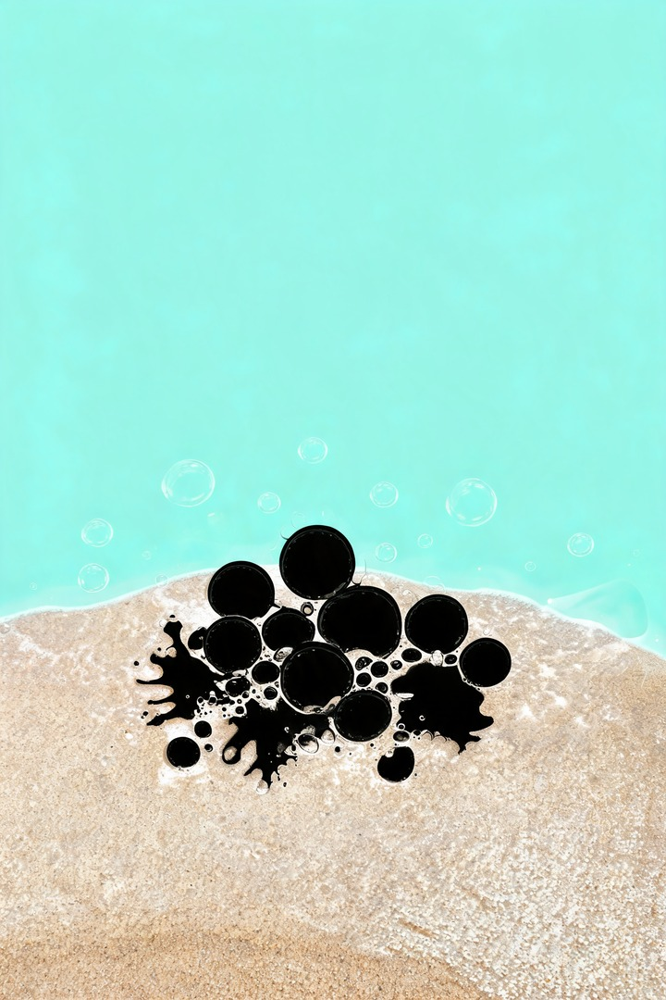
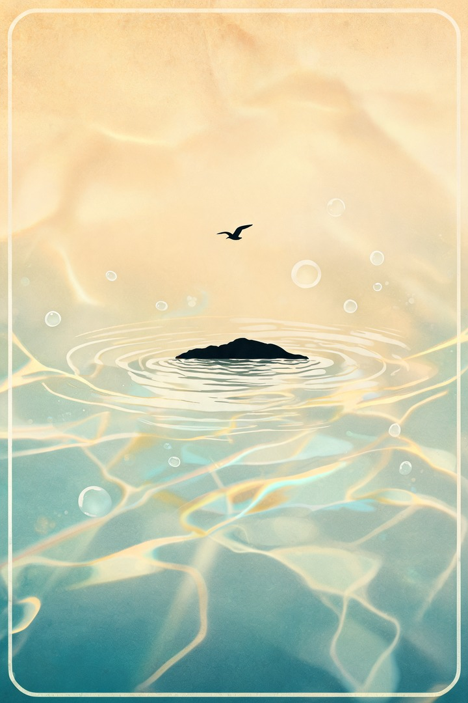
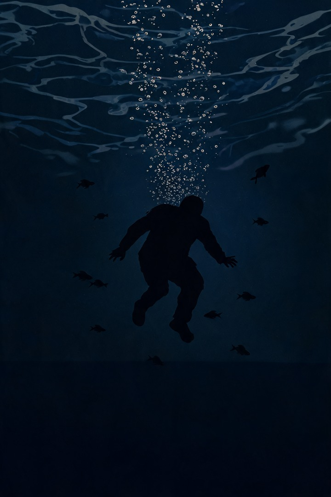
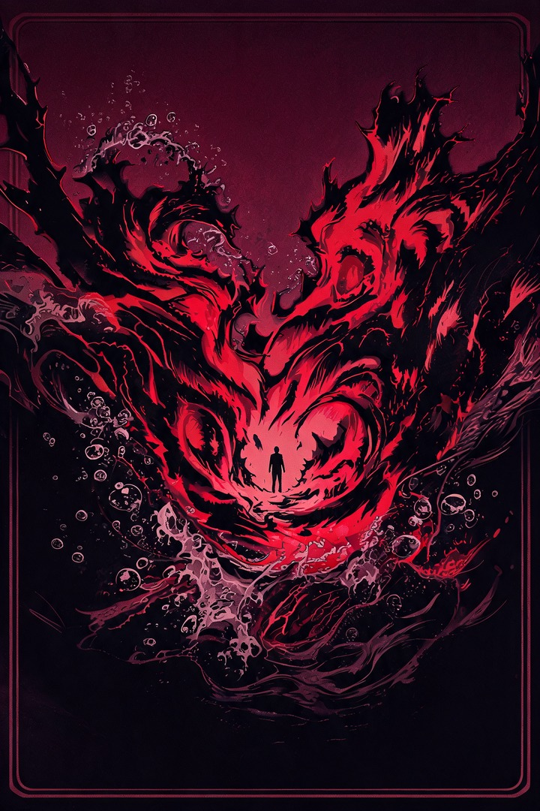
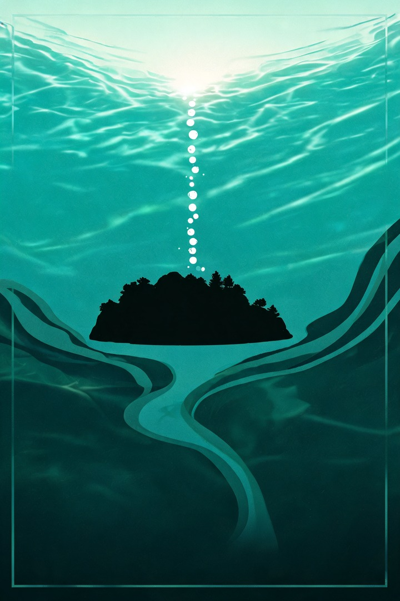

Verse 1 · 潜望镜 · ~0:10
潜望镜外
水底有点笨拙。鱼群陪着，岸上的人最难琢磨。
潜在水底的我有点笨拙
只有鱼群 它陪着我
潜望镜外世界精彩好多
却难看破
岸上的人其实最难琢磨
人鱼的传说 是否 真的存在过
Verse 1 · 潜望镜 · ~0:10
水底有点笨拙。鱼群陪着，岸上的人最难琢磨。

Pre-Chorus · 泡沫
疑惑升起。成为搁浅的泡沫。

Chorus · 岛屿
你是心里的岛屿。海水抚摸，沙滩诱惑。

Verse 2 · 再潜
同一段水底。鼓减半，仍看不破。
Pre-Chorus · 泡沫
泡沫再起。略厚一点。
Chorus · 讯息
岛屿仍在。讯息若即又若离。

Bridge · 淹没
唯一涨噪段。吹过寂寞，淹没。

Chorus · 回满
鼓回满。伴奏让路，人声仍平推。
Outro · 风浪
减配留白。风浪要来临——想靠近。
Credits
Dream Pop × 后朋贝斯 · 独立 EP《潜水艇》